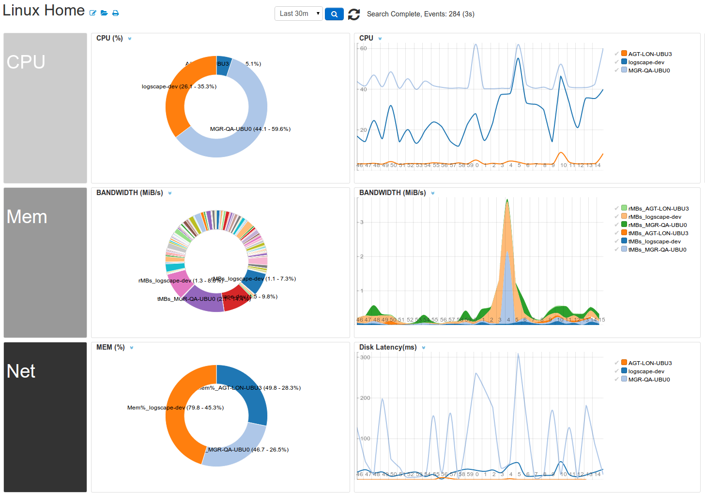

Main Support Site
Explore Logscape Apps
Download
Logscape Apps
Logscape 1.3x Docs |
Logscape 2.0 Getting Started Guide
WindowsApp
UnixApp
Oracle Coherence App
JavaApp
VMWareApp
Cisco Devices
Logscape Applications
Enterprise Level Monitoring. Start monitoring today.
Windows App

Unix App
Coherence App
VMWare App
Monitoring Weblogs
Cisco Devices
Java App